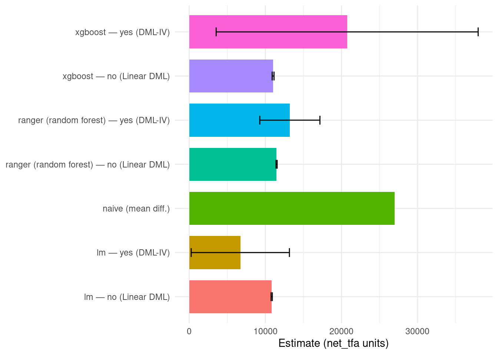
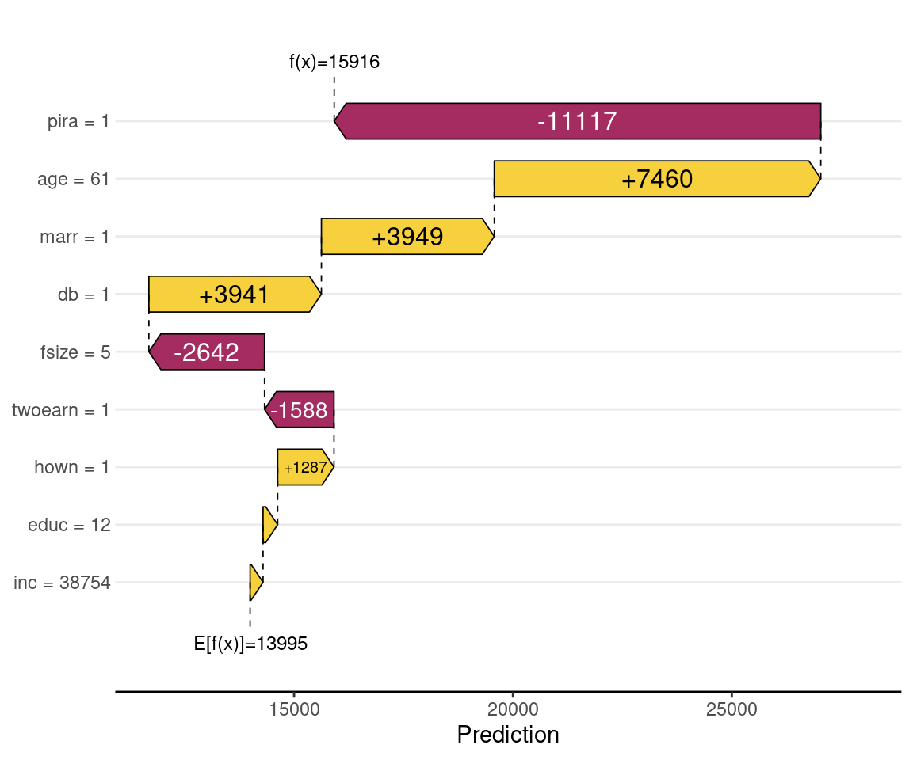

Code
packages <- c(
"RCausalML",
"tidyverse"
)

This notebook implements DML-IV in R using RCausalML’s DMLIVLearner(). Part A uses synthetic data to demonstrate why a naive regression is biased under endogeneity, then fits DML-IV alongside standard DML (no instrument) with three first-stage learners — OLS ("lm"), random forest ("ranger"), and gradient boosting ("xgb") — comparing bias, uncertainty, and runtime. Part B repeats the exercise on the 401(k) IV dataset, where plan eligibility (e401) instruments participation (p401). The approach aligns with the DoubleML R: Basic IV example and the 2SLS/sieve-IV literature; the implementation is RCausalML only.
Double Machine Learning with Instrumental Variables (DML-IV) combines IV identification with double/debiased machine learning. An instrument \(Z\) addresses endogeneity of the treatment \(D\), while ML nuisance models and cross-fitting prevent overfitting bias. DMLIVLearner() in RCausalML builds cross-fitted estimates of \(\hat{\mathbb{E}}[Y \mid X,W]\), \(\hat{\mathbb{E}}[T \mid X,W]\), and \(\hat{\mathbb{E}}[T \mid X,W,Z]\), forms the DML-IV pseudo-outcome, and fits a linear CATE in \(X\) (see ?DMLIVLearner).
In the standard IV directed acyclic graph (DAG):
| Node | Role |
|---|---|
| \(Z\) | Instrument — affects \(D\) but influences \(Y\) only through \(D\) (exclusion restriction) |
| \(C\) | Unobserved confounders (e.g., motivation, ability) |
| \(D\) | Endogenous treatment |
| \(Y\) | Outcome |
A naive regression of \(Y\) on \(D\) is biased because \(D\) is correlated with \(C\). Classical 2SLS projects \(D\) onto \(Z\) and covariates in the first stage. DML-IV generalises the first-stage steps with optional ML learners ("ranger", "glmnet", "xgb") and cross-fitting, targeting a local average treatment effect (LATE) under standard IV assumptions.
Standard DML (LinearDML) applies the same cross-fitted nuisance idea without an instrument. It does not correct for unobserved confounders that affect both \(D\) and \(Y\); it is included here to show IV vs non-IV estimates side by side for each first-stage learner.
The workflow across both parts:
W so tree-based learners (ranger, XGBoost) have features to learn; without W, random forests would have nothing to split on.DMLIVLearner() (with \(Z\)) and LinearDML() (without \(Z\)) for each first-stage learner.Following R packages are required to run this notebook. If any of these packages are not installed, you can install them using the code below:
RCausalML, tidyverse (Part B also requires DoubleML for the 401(k) data)
packages <- c(
"RCausalML",
"tidyverse"
)# Install missing packages
# new_packages <- packages[!(packages %in% installed.packages()[, "Package"])]
# if (length(new_packages)) install.packages(new_packages)# Load packages with suppressed messages
invisible(lapply(packages, function(pkg) {
suppressPackageStartupMessages(library(pkg, character.only = TRUE))
}))# Check loaded packages
cat("Successfully loaded packages:\n")Successfully loaded packages: [1] "package:lubridate" "package:forcats" "package:stringr"
[4] "package:dplyr" "package:purrr" "package:readr"
[7] "package:tidyr" "package:tibble" "package:ggplot2"
[10] "package:tidyverse" "package:RCausalML" "package:stats"
[13] "package:graphics" "package:grDevices" "package:utils"
[16] "package:datasets" "package:methods" "package:base" The DGP follows the IV structure directly:
decision_effect = -2
Three noise covariates W are drawn independently and passed to DMLIVLearner(..., W = W) and LinearDML(..., X = W) so that tree-based learners have a nontrivial design matrix. The IV second stage uses a constant CATE (X = NULL); for non-IV DML the scalar summary is the sample mean of the fitted \(\hat{\theta}(W_i)\).
n <- 10000
decision_effect <- -2
instrument_effect <- 0.7
set.seed(1234)
confounder <- rbinom(n, 1, 0.3)
instrument <- rbinom(n, 1, 0.5)
decision <- as.numeric(runif(n) <= instrument_effect * instrument + 0.4 * confounder)
outcome <- 30 + decision_effect * decision + 10 * confounder + rnorm(n, sd = 2)
W_ctrl <- matrix(stats::rnorm(n * 3L), nrow = n, ncol = 3L)
colnames(W_ctrl) <- paste0("W", 1:3)
df <- data.frame(instrument, decision, outcome)The difference in mean outcomes between treatment groups ignores endogeneity. Because \(C\) affects both \(D\) and \(Y\), this comparison is biased — we expect a value near +1 rather than the true effect of \(-2\).
[1] 1.000476The naive estimate is far from the true effect (\(-2\)). The positive sign reflects confounding by \(C\): units with \(C=1\) are both more likely to take the decision and have higher baseline outcomes, pulling the comparison upward.
We loop over "lm", "ranger", and "xgb" and fit both estimators for each:
DMLIVLearner): uses Z = instrument with first stages on W; constant second stage (X = NULL). The scalar estimate and SE are read from summary(fitted$model_cate$model).LinearDML): partially linear DML with the same Y, T, and nuisance features X = W_ctrl, but no instrument. The scalar summary is \(\frac{1}{n}\sum_i \hat{\theta}(W_i)\).Both use discrete_treatment = TRUE (binary treatment). Cross-fitting uses cv = 3 and num.trees = 200 for ranger to keep render time manageable.
truth <- decision_effect
cv_fold <- 3L
rf_trees <- 200L
learners <- c("lm", "ranger", "xgb")
if (!requireNamespace("xgboost", quietly = TRUE)) {
learners <- setdiff(learners, "xgb")
}
se_mean_cate <- function(fit, X) {
te <- predict(fit, X)
sqrt(stats::var(as.vector(te), na.rm = TRUE) / length(as.vector(te)))
}
run_one <- function(learner, use_iv) {
tm <- system.time({
if (use_iv) {
mod <- DMLIVLearner(
model_y_xw = learner,
model_t_xw = learner,
model_t_xwz = learner,
fit_cate_intercept = FALSE,
discrete_treatment = TRUE,
cv = cv_fold,
random_state = 1234L
)
fit_obj <- fit(
mod,
Y = df$outcome,
T = df$decision,
Z = df$instrument,
X = NULL,
W = W_ctrl,
num.trees = rf_trees
)
sm <- summary(fit_obj$model_cate$model)$coefficients
est <- as.numeric(sm[1L, "Estimate"])
se <- as.numeric(sm[1L, "Std. Error"])
} else {
mod <- LinearDML(
model_y = learner,
model_t = learner,
fit_cate_intercept = TRUE,
n_fold = cv_fold,
seed = 1234L
)
fit_obj <- fit(
mod,
X = W_ctrl,
treatment = df$decision,
y = df$outcome,
num.trees = rf_trees
)
est <- mean(as.vector(predict(fit_obj, W_ctrl)))
se <- se_mean_cate(fit_obj, W_ctrl)
}
})
tibble::tibble(
learner = learner,
instrumental_variable = use_iv,
estimate = est,
std_error = se,
abs_bias = abs(est - truth),
time_sec = as.numeric(tm["elapsed"])
)
}
cmp <- purrr::map_dfr(learners, function(lrn) {
dplyr::bind_rows(
run_one(lrn, use_iv = TRUE),
run_one(lrn, use_iv = FALSE)
)
})
cmp <- cmp |>
dplyr::mutate(
learner = dplyr::case_when(
learner == "lm" ~ "lm",
learner == "ranger" ~ "ranger (random forest)",
learner == "xgb" ~ "xgboost",
TRUE ~ as.character(learner)
),
instrumental_variable = ifelse(instrumental_variable, "yes (DML-IV)", "no (Linear DML)")
) |>
dplyr::arrange(learner, dplyr::desc(instrumental_variable))
cmp| First-stage learner | Uses instrument Z | Estimate | Std. error | |Bias| | Time (s) |
|---|---|---|---|---|---|
| lm | yes (DML-IV) | -1.887 | 0.142 | 0.113 | 0.045 |
| lm | no (Linear DML) | 1.003 | 0.001 | 3.003 | 0.029 |
| ranger (random forest) | yes (DML-IV) | -1.998 | 0.381 | 0.002 | 10.241 |
| ranger (random forest) | no (Linear DML) | 1.032 | 0.002 | 3.032 | 6.366 |
| xgboost | yes (DML-IV) | -2.177 | 0.584 | 0.177 | 1.587 |
| xgboost | no (Linear DML) | 1.009 | 0.002 | 3.009 | 0.753 |
ggplot2::ggplot(cmp, ggplot2::aes(x = learner, y = abs_bias, fill = instrumental_variable)) +
ggplot2::geom_col(position = ggplot2::position_dodge(width = 0.8), width = 0.75) +
ggplot2::labs(
x = NULL,
y = "Absolute bias",
fill = NULL
) +
ggplot2::theme_minimal() +
ggplot2::theme(legend.position = "top")
Takeaway. For every first-stage learner, DML-IV recovers the true decision_effect of \(-2\), while standard DML without the instrument stays near the naive confounded estimate (\(\approx +1\)). Once W is provided, random forest and XGBoost nuisances behave sensibly. The absolute bias and runtime columns let you weigh accuracy against computational cost across learners.
The following reproduces the simplest DML-IV specification: linear nuisances, no auxiliary covariates W, 5-fold cross-fitting.
iv_mod_lm <- DMLIVLearner(
model_y_xw = "lm",
model_t_xw = "lm",
model_t_xwz = "lm",
fit_cate_intercept = FALSE,
discrete_treatment = TRUE,
cv = 5L,
random_state = 1234L
)
iv_fit_lm <- fit(
iv_mod_lm,
Y = df$outcome,
T = df$decision,
Z = df$instrument,
X = NULL
)
summary(iv_fit_lm$model_cate$model)
Call:
stats::lm(formula = pseudo ~ 0 + ., data = as.data.frame(phi))
Residuals:
Min 1Q Median 3Q Max
-43.138 -11.291 0.295 11.107 36.812
Coefficients:
Estimate Std. Error t value Pr(>|t|)
X1 -1.8891 0.1425 -13.26 <2e-16 ***
---
Signif. codes: 0 '***' 0.001 '**' 0.01 '*' 0.05 '.' 0.1 ' ' 1
Residual standard error: 14.25 on 9999 degrees of freedom
Multiple R-squared: 0.01727, Adjusted R-squared: 0.01717
F-statistic: 175.7 on 1 and 9999 DF, p-value: < 2.2e-16For richer DGPs, replace "lm" with "ranger", "glmnet", or "xgb". For a nonlinear CATE in \(X\), see NonParamDMLIVLearner() in the same source file.
The fitted second stage is stored as iv_fit$model_cate$model (an lm object). When X = NULL, the only coefficient is the constant treatment effect, labelled X1 (an internal column of ones).
sm <- summary(iv_fit_lm$model_cate$model)$coefficients
data.frame(
estimate = sm[, "Estimate"],
std_error = sm[, "Std. Error"],
t_value = sm[, "t value"],
p_value = sm[, "Pr(>|t|)"]
)The DML-IV estimate is close to the true value of \(-2\), with a standard error from the final OLS regression. This confirms that the instrument successfully corrects for the confounding that inflated the naive estimate.
| Estimator | Estimate (approx.) | Interpretation |
|---|---|---|
| Naive mean difference | \(\approx +1\) | Biased upward by unobserved confounder \(C\) |
DML-IV (DMLIVLearner) |
\(\approx -1.9\) | Constant CATE; LATE-style estimand under binary \(Z\), \(D\) |
With binary \(Z\) and \(D\), the DML-IV construction targets a LATE-style estimand for the complier subpopulation. The constant second stage (X = NULL) collapses this to a single scalar, analogous to a cross-fitted 2SLS estimate.
The 401(k) dataset (Chernozhukov et al., 2018, 2020) is a natural IV application:
| Variable | Role |
|---|---|
net_tfa |
Outcome \(Y\) — net total financial assets |
p401 |
Endogenous treatment \(D\) — participation in a 401(k) plan |
e401 |
Instrument \(Z\) — employer offers a 401(k) plan |
age, inc, fsize, educ, db, marr, twoearn, pira, hown
|
Covariates |
Participation (p401) is endogenous: individuals who choose to participate may differ systematically from those who do not. Eligibility (e401) provides excluded variation: it affects participation but has no direct effect on wealth beyond its influence on plan participation. Under standard IV assumptions, DML-IV targets a LATE-style estimate of the effect of participation on net assets.
We use an 80/20 stratified train–test split on p401 and compare the same three estimators as Part A — naive mean difference, DML-IV, and standard DML (no instrument) — across all first-stage learners. Because there is no simulation ground truth here, comparisons are across estimators rather than against a known value.
df_401k <- doubleml_fetch_401k(return_type = "data.frame", instrument = TRUE)
if (is.null(df_401k)) {
stop("Install DoubleML for Part B: install.packages(\"DoubleML\")")
}
# Y = net_tfa; D = p401 (participation); Z = e401 (eligibility); X = covariates
x_cols_401k <- c("age", "inc", "fsize", "educ", "db", "marr", "twoearn", "pira", "hown")
cat("Dimensions:", nrow(df_401k), "x", ncol(df_401k), "\n")Dimensions: 9915 x 12 head(df_401k)X_401k <- as.matrix(df_401k[, x_cols_401k, drop = FALSE])
y_401k <- df_401k$net_tfa
t_401k <- df_401k$p401
z_401k <- df_401k$e401
set.seed(3141)
train_frac <- 0.8
i1 <- which(t_401k == 1L)
i0 <- which(t_401k == 0L)
n1_tr <- max(1L, floor(train_frac * length(i1)))
n0_tr <- max(1L, floor(train_frac * length(i0)))
train_idx <- c(sample(i1, n1_tr), sample(i0, n0_tr))
test_idx <- setdiff(seq_along(t_401k), train_idx)
W_tr <- X_401k[train_idx, , drop = FALSE]
y_tr <- y_401k[train_idx]
t_tr <- t_401k[train_idx]
z_tr <- z_401k[train_idx]
cat(
"Train n =", length(train_idx), "| Test n =", length(test_idx),
"| mean(p401) train =", round(mean(t_tr), 3),
"| mean(e401) train =", round(mean(z_tr), 3), "\n"
)Train n = 7931 | Test n = 1984 | mean(p401) train = 0.262 | mean(e401) train = 0.372 cv_fold <- 3L
rf_trees <- 200L
learners_401k <- c("lm", "ranger", "xgb")
if (!requireNamespace("xgboost", quietly = TRUE)) {
learners_401k <- setdiff(learners_401k, "xgb")
}
naive_401k <- mean(y_tr[t_tr == 1L]) - mean(y_tr[t_tr == 0L])
se_mean_cate <- function(fit, X) {
te <- predict(fit, X)
sqrt(stats::var(as.vector(te), na.rm = TRUE) / length(as.vector(te)))
}
run_one_401k <- function(learner, use_iv) {
tm <- system.time({
if (use_iv) {
mod <- DMLIVLearner(
model_y_xw = learner,
model_t_xw = learner,
model_t_xwz = learner,
fit_cate_intercept = FALSE,
discrete_treatment = TRUE,
discrete_instrument = TRUE,
cv = cv_fold,
random_state = 3141L
)
fit_obj <- fit(
mod,
Y = y_tr,
T = t_tr,
Z = z_tr,
X = NULL,
W = W_tr,
num.trees = rf_trees
)
sm <- summary(fit_obj$model_cate$model)$coefficients
est <- as.numeric(sm[1L, "Estimate"])
se <- as.numeric(sm[1L, "Std. Error"])
} else {
mod <- LinearDML(
model_y = learner,
model_t = learner,
fit_cate_intercept = TRUE,
n_fold = cv_fold,
seed = 3141L
)
fit_obj <- fit(
mod,
X = W_tr,
treatment = t_tr,
y = y_tr,
num.trees = rf_trees
)
est <- mean(as.vector(predict(fit_obj, W_tr)))
se <- se_mean_cate(fit_obj, W_tr)
}
})
tibble::tibble(
learner = learner,
instrumental_variable = use_iv,
estimate = est,
std_error = se,
time_sec = as.numeric(tm["elapsed"])
)
}
cmp_401k <- purrr::map_dfr(learners_401k, function(lrn) {
dplyr::bind_rows(
run_one_401k(lrn, use_iv = TRUE),
run_one_401k(lrn, use_iv = FALSE)
)
})
cmp_401k <- cmp_401k |>
dplyr::mutate(
learner = dplyr::case_when(
learner == "lm" ~ "lm",
learner == "ranger" ~ "ranger (random forest)",
learner == "xgb" ~ "xgboost",
TRUE ~ as.character(learner)
),
instrumental_variable = ifelse(
instrumental_variable,
"yes (DML-IV)",
"no (Linear DML)"
)
) |>
dplyr::arrange(learner, dplyr::desc(instrumental_variable))
cmp_naive <- tibble::tibble(
learner = "naive (mean diff.)",
instrumental_variable = "—",
estimate = naive_401k,
std_error = NA_real_,
time_sec = NA_real_
)
cmp_401k_all <- dplyr::bind_rows(cmp_naive, cmp_401k)
cmp_401k_all| Model / first-stage learner | Uses instrument Z (e401) | Estimate | Std. error | Time (s) |
|---|---|---|---|---|
| naive (mean diff.) | — | 26987.121 | NA | NA |
| lm | yes (DML-IV) | 6709.278 | 6451.152 | 0.197 |
| lm | no (Linear DML) | 10833.799 | 79.261 | 0.154 |
| ranger (random forest) | yes (DML-IV) | 13218.878 | 3948.575 | 4.479 |
| ranger (random forest) | no (Linear DML) | 11475.761 | 70.963 | 3.404 |
| xgboost | yes (DML-IV) | 20744.952 | 17210.868 | 1.051 |
| xgboost | no (Linear DML) | 11016.277 | 121.342 | 0.730 |
est_plot <- cmp_401k_all |>
dplyr::filter(learner != "naive (mean diff.)") |>
dplyr::mutate(
series = paste(learner, instrumental_variable, sep = " — ")
)
est_plot <- dplyr::bind_rows(
cmp_401k_all |>
dplyr::filter(learner == "naive (mean diff.)") |>
dplyr::mutate(series = learner),
est_plot
)
ggplot2::ggplot(est_plot, ggplot2::aes(x = series, y = estimate, fill = series)) +
ggplot2::geom_col(width = 0.75) +
ggplot2::geom_errorbar(
ggplot2::aes(ymin = estimate - std_error, ymax = estimate + std_error),
width = 0.2,
na.rm = TRUE
) +
ggplot2::coord_flip() +
ggplot2::labs(x = NULL, y = "Estimate (net_tfa units)", fill = NULL) +
ggplot2::theme_minimal() +
ggplot2::theme(legend.position = "none")
Reading the table. DML-IV rows use e401 as an instrument for p401 with nuisances on the full covariate matrix. Standard DML rows ignore e401 and estimate a partially linear effect of p401 on net_tfa; this is not the same causal estimand as IV if participation is endogenous. The naive row is the raw mean-difference by p401. Because there is no simulation truth, stability across learners (rather than closeness to a known value) is the main diagnostic.
SHAP values decompose the predicted CATE \(\hat{\tau}(X)\) for each observation into contributions from individual covariates. These are descriptive — they characterise the fitted surface, not the causal model behind it.
The comparison table above uses a scalar DML-IV fit (X = NULL). For SHAP we need \(\hat{\tau}(X)\) that varies with covariates, so we refit DMLIVLearner() with a linear heterogeneous second stage (X = covariates, W = NULL) and pair it with LinearDML() in the same second-stage specification. The naive mean difference has no covariate-based predictions and is omitted.
Permutation SHAP (use_permshap = TRUE) is computed on a small explanation subsample with a separate background sample drawn from the training fold. Explanation and background rows are kept non-overlapping where the pool permits, to avoid leakage. Parallel execution via {future} is used when available.
We compute permutation SHAP for DMLIVLearner and LinearDML fits for each nuisance learner. SHAP values show which covariates push the predicted CATE \(\hat{\tau}(X)\) up or down for each observation in the explanation sample.
has_shap <- requireNamespace("kernelshap", quietly = TRUE) &&
requireNamespace("shapviz", quietly = TRUE)if (has_shap) {
W_tr_n <- W_tr
colnames(W_tr_n) <- x_cols_401k
fit_shap_dmliv <- function(learner) {
mod <- DMLIVLearner(
model_y_xw = learner,
model_t_xw = learner,
model_t_xwz = learner,
fit_cate_intercept = TRUE,
discrete_treatment = TRUE,
discrete_instrument = TRUE,
cv = cv_fold,
random_state = 3141L
)
fit(
mod,
Y = y_tr,
T = t_tr,
Z = z_tr,
X = W_tr_n,
W = NULL,
num.trees = rf_trees
)
}
fit_shap_ldml <- function(learner) {
mod <- LinearDML(
model_y = learner,
model_t = learner,
fit_cate_intercept = TRUE,
n_fold = cv_fold,
seed = 3141L
)
fit(mod, X = W_tr_n, treatment = t_tr, y = y_tr, num.trees = rf_trees)
}
fits_iv <- stats::setNames(lapply(learners_401k, fit_shap_dmliv), learners_401k)
fits_pl <- stats::setNames(lapply(learners_401k, fit_shap_ldml), learners_401k)
}if (!has_shap) {
message("Skipping SHAP: install.packages(c(\"kernelshap\", \"shapviz\"))")
} else {
W_pool <- as.data.frame(W_tr)
colnames(W_pool) <- x_cols_401k
X_shap_pool <- W_pool[!duplicated(W_pool), , drop = FALSE]
set.seed(3150L)
nexplain <- min(80L, nrow(X_shap_pool))
nbg <- min(50L, nrow(X_shap_pool))
if (nrow(X_shap_pool) > nexplain + nbg) {
idxexplain <- sample.int(nrow(X_shap_pool), nexplain)
idxbg <- sample(setdiff(seq_len(nrow(X_shap_pool)), idxexplain), nbg)
} else {
idxexplain <- sample.int(nrow(X_shap_pool), nexplain)
idxbg <- sample.int(nrow(X_shap_pool), nbg)
}
X_explain <- X_shap_pool[idxexplain, , drop = FALSE]
bg_X_df <- X_shap_pool[idxbg, , drop = FALSE]
}if (has_shap && exists("X_explain")) {
n_workers <- if (requireNamespace("future", quietly = TRUE)) {
min(4L, max(1L, future::availableCores() - 1L))
} else {
1L
}
use_parallel <- n_workers > 1L && requireNamespace("future", quietly = TRUE)
fg_prev <- getOption("future.globals.maxSize", default = 500 * 1024^2)
if (use_parallel) {
options(future.globals.maxSize = max(2 * 1024^3, fg_prev))
future::plan(future::multisession, workers = n_workers)
}
explain_one <- function(fit_obj, label) {
tryCatch(
{
args <- list(
fit_obj,
X = X_explain,
bg_X = bg_X_df,
use_permshap = TRUE,
verbose = FALSE,
max_iter = 60L,
tol = 0.02,
parallel = use_parallel,
parallel_args = list(packages = c("RCausalML", "ranger", "xgboost"))
)
if (!requireNamespace("xgboost", quietly = TRUE)) {
args$parallel_args$packages <- setdiff(args$parallel_args$packages, "xgboost")
}
do.call(explain_cate, args)
},
error = function(e) {
warning("SHAP failed for ", label, ": ", conditionMessage(e))
NULL
}
)
}
tryCatch(
{
ks_iv <- mapply(
explain_one,
fits_iv,
paste0("DML-IV (", names(fits_iv), ")"),
SIMPLIFY = FALSE
)
ks_pl <- mapply(
explain_one,
fits_pl,
paste0("Linear DML (", names(fits_pl), ")"),
SIMPLIFY = FALSE
)
shp_iv <- lapply(ks_iv, function(k) {
if (!is.null(k)) shapviz::shapviz(k) else NULL
})
shp_pl <- lapply(ks_pl, function(k) {
if (!is.null(k)) shapviz::shapviz(k) else NULL
})
},
finally = {
if (use_parallel) {
future::plan(future::sequential)
options(future.globals.maxSize = fg_prev)
}
}
)
}Beeswarm importance — shows the distribution of SHAP values per feature; large absolute values indicate a strong influence on \(\hat{\tau}(X)\). Ranger-based DML-IV and Linear DML are shown side by side.

Bar importance (mean |SHAP|) — ranks features by average absolute contribution to \(\hat{\tau}(X)\) across all nuisance learners. These are contributions to the predicted CATE on the explanation subsample, not to the scalar ATE in the table above.


Dependence plots show how each covariate drives the attributed CATE, with colour optionally encoding a second variable for interaction effects. Results are shown for ranger nuisances with a shared \(y\)-axis for comparability.

If the SHAP values for age trend upward with age, the fitted surface attributes a higher predicted treatment effect to older units — an exploratory finding, not a standalone causal claim.
Waterfall and force plots decompose a single row’s predicted CATE into the baseline value plus individual feature contributions. We use the ranger DML-IV fit when available.

Waterfall for the first row with marr == 1 (married), illustrating how the predicted CATE is decomposed for a specific subgroup.

DML-IV and Linear DML CATE surfaces can differ in both level and shape; treat comparisons as exploratory diagnostics, not tests of IV validity. If patchwork is not installed, panels print sequentially.
| Component | Description |
|---|---|
| IV structure | Instrument \(Z\), endogenous treatment \(D\), outcome \(Y\); unobserved confounders \(C\) bias naive comparisons |
DMLIVLearner() |
Specify model_y_xw, model_t_xw, model_t_xwz; set discrete_treatment, cv, random_state
|
fit(Y, T, Z, X, W) |
Cross-fitted nuisances + linear CATE in X; use X = NULL for a constant (scalar) effect |
LinearDML() (no IV) |
Same Y, T, covariates; omits \(Z\) — biased when unobserved confounders affect both \(D\) and \(Y\)
|
| Inference |
summary(fitted$model_cate$model) gives OLS standard errors from the IV second stage |
| Nonlinear CATE |
NonParamDMLIVLearner() for ranger or lm final stage on pseudo-outcomes |
| SHAP | Refit DML-IV with heterogeneous X; use explain_cate() + shapviz for importance, dependence, and waterfall plots |
Part A showed that DML-IV recovers the true treatment effect across all three learners while standard DML without the instrument remains confounded. Part B applied the same pipeline to a real-world endogeneity problem, where IV and non-IV estimates are expected to differ because participation in a 401(k) is not randomly assigned conditional on observables alone.
Chernozhukov, V., Chetverikov, D., Demirer, M., Duflo, E., Hansen, C., Newey, W., & Robins, J. (2018). Double/debiased machine learning for treatment and structural parameters. The Econometrics Journal, 21(1), C1–C68. https://doi.org/10.1111/ectj.12097
Ruiz de Villa, A. (2024). Causal Inference for Data Science. Manning Publications.
DoubleML R: Basic Instrumental Variables Calculation (conceptual reference; this notebook uses RCausalML)